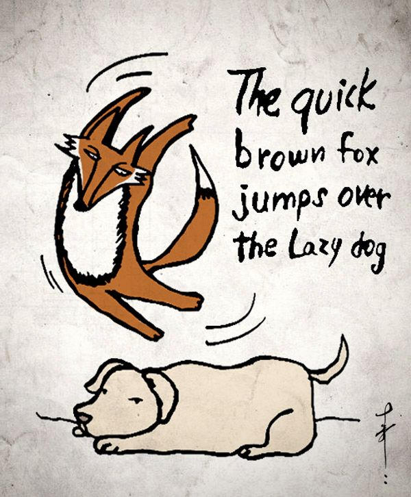

A typography tale as old as time
starring:
The quick brown fox
and the lazy dog
The sentence reads -
The quick brown fox jumps over the lazy dog
This sentence is a pangram -
a sentence that uses all letters of the alphabet. In relation to typography, this sentence would be one of importance to see how certain font type will look on what you write. Since the sentence contains every letter of the alphabet, you will see how the font varies per letter.
— Info from Wikipedia
a sentence that uses all letters of the alphabet. In relation to typography, this sentence would be one of importance to see how certain font type will look on what you write. Since the sentence contains every letter of the alphabet, you will see how the font varies per letter.
— Info from Wikipedia

"The quick brown fox jumps over the lazy dog"
This sentence is the most popular pangram which uses all 26 letters of the alphabet in the shortest sentence.
This sentence is the most popular pangram which uses all 26 letters of the alphabet in the shortest sentence.